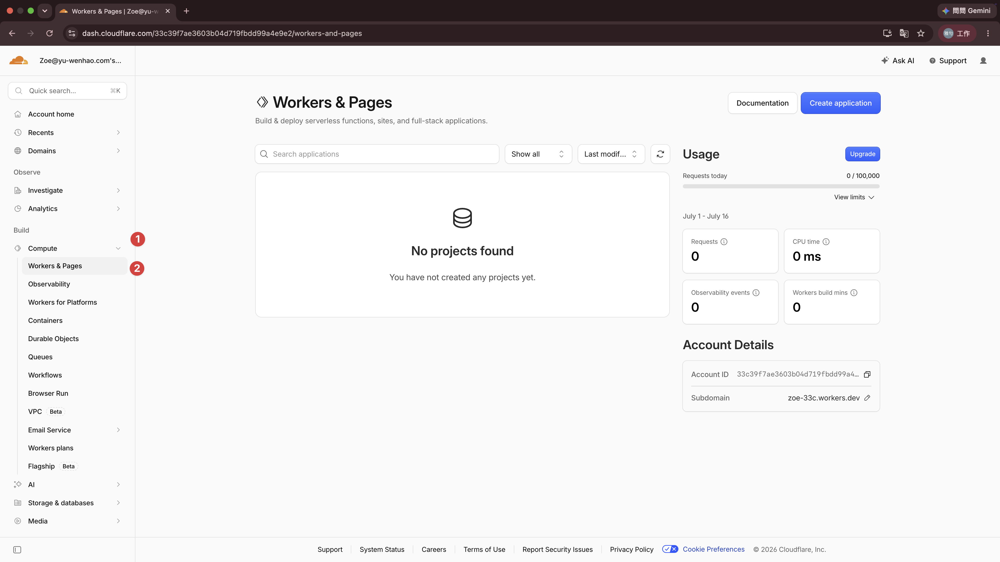
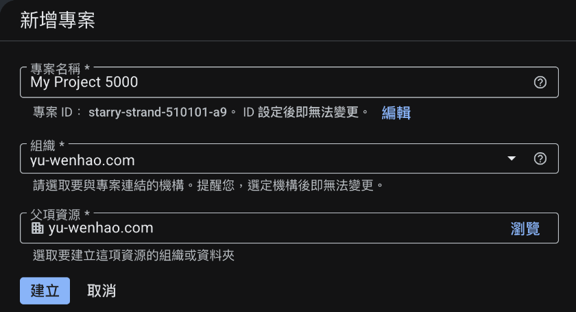
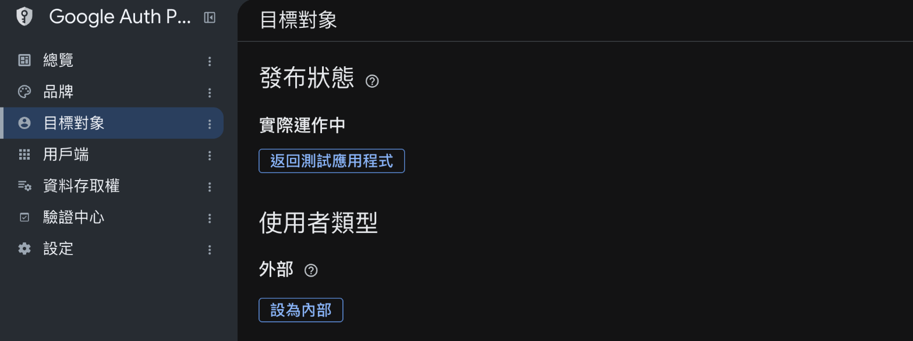
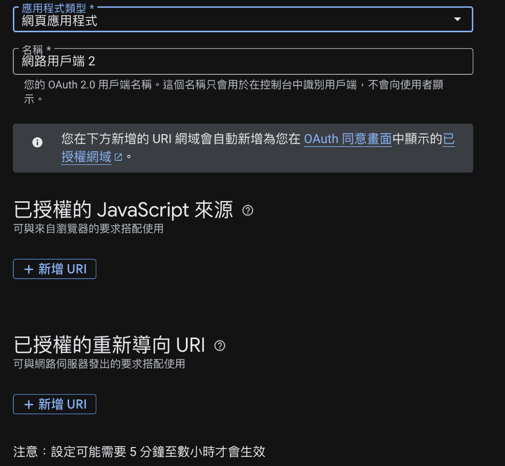

匯流顧問 × 蔡承恩（品客） · Claude Code 一對一實作 · 第 2 堂
先讓網站有一個誰都打得開的網址，再來談：網站做訂閱制，會員工具用哪種比較好。
今天 · 兩件事
01
你的電腦會關機，網站不能跟著關。
上線 · 為什麼
Cloudflare ＝ 幫你把網站掛上網、給你網址的地方。
上線 · 要花錢嗎
網站剛上線、客人還不多的時候，免費方案就夠用。
上線 · 第一步
dash.cloudflare.com/sign-up
免費、免信用卡。問你用途就按 Skip；驗證信沒收到，看垃圾信匣。
點這一下，Cloudflare 會幫你配好網址的名字。不點的話，等下部署會拿不到網址。
你的名字.workers.dev）＝ 好了。
上線 · 第二步
把你的網站資料夾一鍵變成網址的工具。不用先裝，用到時自己會下載。真正要先有的是 Node 22 以上。
你的網站資料夾 ── 部署 ──▶ 你的網址
上線 · 第三步
Claude 會幫你跑，瀏覽器會自己跳出授權頁。
用剛剛註冊的那個帳號授權一次。
它印出你的 email ＝ 接上了。
部署 · 找到網站
告訴 Claude 網站的程式放在哪裡。它確認找對了，再動手。
部署 · 動手
___.workers.dev 的測試網址，打開看得到你的網站。部署 · 驗收
網址打得開，長得跟你本機看到的一樣。
網址丟到自己的 LINE，用手機點開，看到同一個網站。
叫 Claude 改首頁一個字、重新部署。重整看到新字 ＝ 你會更新網站了。
網域 · 先想清楚
___.workers.dev 能用，但客人記不住。接上你自己的網域，客人看到的就是你的品牌。
網域現在掛著舊網站的話，接上之後，客人打開看到的就是新網站。先用 workers.dev 的網址把新網站從頭看一遍，沒問題再換。
你的 email 是 @你的網域 結尾的嗎？是的話，網域搬到 Cloudflare 時，要確認 email 那一筆有跟著搬，不然會收不到信。用 Gmail 就不用管。
改完到生效，可能幾分鐘，也可能幾小時。沒馬上生效是正常的，今天先用 workers.dev 的網址驗收。
要用到你買網域那個網站的帳號密碼，先確認登得進去。
網域 · 動手
Google 登入 · 先決定
去 Google 申請之前，先想好網站上的登入長什麼樣。這三題你來決定，等一下交給 Claude 做。
「用 Google 登入」的按鈕放在哪裡？
例如：每一頁的右上角。
哪些頁面要登入才能看？
例如：工具頁要登入，首頁、介紹頁不用。
登入之後，畫面上多了什麼？
例如：右上角顯示名字和頭像，旁邊有登出按鈕。
記下誰登入過（會員名單）先不做，等做訂閱制時再加。
Google 登入 · 先申請
客人用 Google 帳號登入你的網站，其實是請 Google 幫你確認「這個人是誰」。Google 要先認識你的網站，才肯幫忙。
| 做什麼 | 為什麼要做 | |
|---|---|---|
| 〇 | 先決定登入要怎樣 | 按鈕放哪、哪些頁要登入、登入後看到什麼。上一頁你已經決定好了 |
| 壹 | 建一個 project | 在 Google 那邊替你的網站開一個資料夾，後面的設定都放在裡面 |
| 貳 | 品牌、目標對象 | 品牌：客人按登入時，看到的網站名稱。目標對象：誰可以登入，要開放給所有人 |
| 參 | 建用戶端 ID | 用戶端 ID ＝ Google 發給你網站的一串編號。網站每次請 Google 幫忙登入，都要報上這串編號，Google 才知道是你 |
| 登記網址 | 只有登記過的網址能用這串編號。別人拿去用在他的網站，Google 不會理 | |
| 肆 | 編號交給 Claude | Claude 把編號接進網站程式，網站才會報上它 |
壹到參都在瀏覽器，用你本人的 Google 帳號，你自己點。
Google 登入 · 壹 建 project

畫面跟 Claude 講的不一樣？截圖貼給 Claude，它看了再告訴你點哪裡。
Google 登入 · 貳 品牌和目標對象
填網站名稱、聯絡 email。客人按登入時，看到的就是這些。
使用者類型選「外部」。「發布」先不按，登記完網址再回來按。

Google 登入 · 參 建用戶端 ID

Google 登入 · 肆 接進網站
部署 · 存檔
02
先看會員工具有哪幾種，再挑適合你網站的那一種。
訂閱制 · 會員工具
差別在：你的東西放在誰家、收款走誰的。
訂閱制 · 比一比
| ① 平台型 | ② 外掛型 | ③ 自己組 | |
|---|---|---|---|
| 多快上線 | 最快，註冊就能開賣 | 快，網站加幾段程式碼 | 要自己做，Claude 陪你做 |
| 能改多細 | 平台給什麼就用什麼 | 會員頁、登入畫面照它的樣子 | 全部照你的意思 |
| 放得進你的工具嗎 | 放內容可以，放工具不行 | 可以 | 可以 |
| 收款 | 平台代收，被抽成 | 大多只接 Stripe，台灣公司開不了帳號 | 接台灣金流：綠界、藍新 |
訂閱制 · 你的網站
你賣的是自己做的蝦皮 AI 工具，會員付了錢，是要進你的網站用工具。
會員工具要回答的，其實只有一題：這個人付錢了嗎？
訂閱制 · 自己組
| 回答的問題 | 用什麼 | |
|---|---|---|
| 登入 | 這個人是誰 | Google 登入 |
| 會員資料 | 他付錢了嗎、用到哪一天 | 一個資料庫，放在 Cloudflare |
| 收款 | 每個月自動扣款 | 綠界或藍新的信用卡定期定額 |
客人每次打開工具，網站先查一下：付了、還沒到期，才讓他用。
訂閱制 · 自動扣款
綠界、藍新都有，功能差不多。挑你已經有帳號、或客人比較熟的那一家。
真的要串的時候，技術細節交給 Claude。金流都有測試環境，上線前不用刷真卡就能先跑一遍。
收尾 · 今天帶走
之後每一次改網站，都是同一套：改 → 部署 → 存檔。